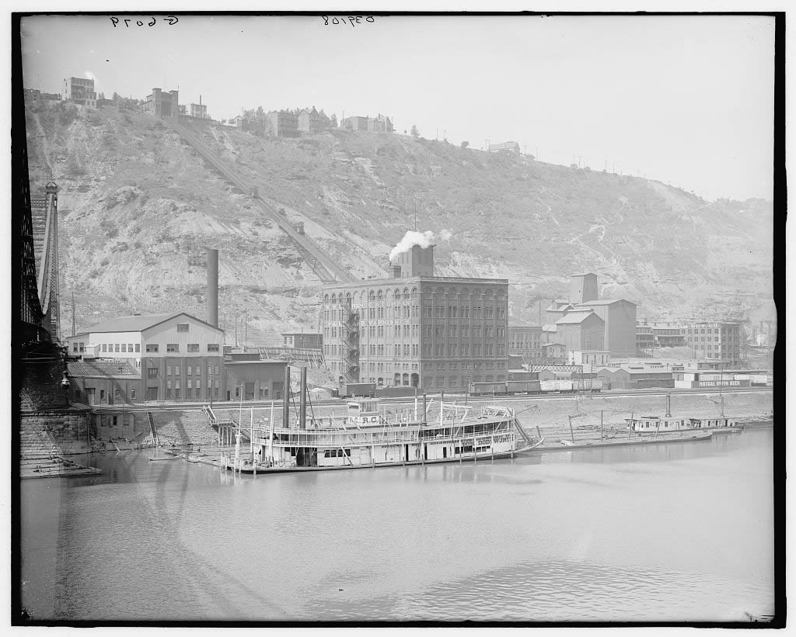
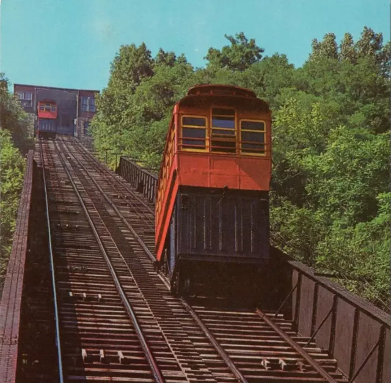
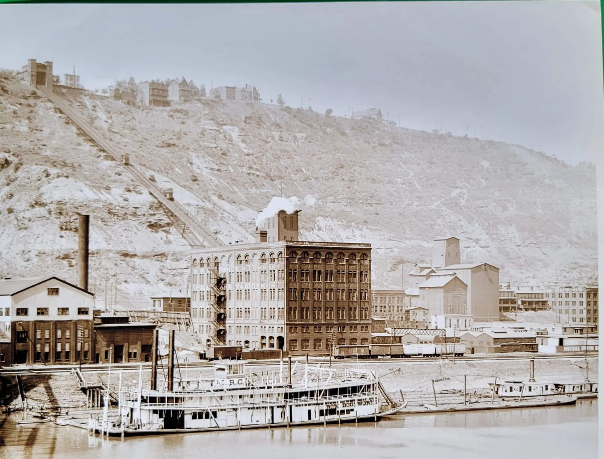

Historical Facts About the Duquesne Incline
- The Duquesne Incline opened in 1877, making it one of the oldest funicular railways in the United States.
- The incline provides stunning panoramic views of Pittsburgh's Three Rivers and downtown skyline.
- It is a funicular railway, meaning it uses two cars balanced against each other to travel up and down a 30-degree incline.
- The Duquesne Incline was closed in 1962 but was restored and reopened in 1983 by the Pittsburgh History and Landmarks Foundation.
- The incline was listed on the National Register of Historic Places in 1977, recognizing its significance in Pittsburgh's history.
- The ride is about 800 feet long, with a vertical ascent of 400 feet, providing a unique and thrilling experience.
- The original wooden cars were replaced in the 1980s with modern steel cars while maintaining the historical design.
- Although it is a popular tourist attraction, the incline is also used by locals for their daily commute up Mount Washington.
- The incline features two stations: the lower station in the South Side and the upper station at the top of Mount Washington.
- The Duquesne Incline has become a cultural icon of Pittsburgh and is featured prominently in the city's promotional materials.
Significant Timeline of the Development of the Duquesne Incline
| Year | Event |
|---|---|
| 1877 | The Duquesne Incline begins operation, offering a means of transportation from the riverfront to the top of Mount Washington. |
| 1882 | The Duquesne Incline is expanded with the addition of a second track, allowing for two-way travel. |
| 1900 | The Duquesne Incline is updated with electric-powered engines, replacing the steam-powered engines previously used. |
| 1962 | The Duquesne Incline ceases operation due to financial difficulties and the development of alternative transportation options. |
| 1977 | The Duquesne Incline is listed on the National Register of Historic Places, preserving its historical significance. |
| 1983 | The Duquesne Incline is restored and reopens to the public, under the management of the Pittsburgh History and Landmarks Foundation. |
| 1995 | The Duquesne Incline is recognized as a symbol of Pittsburgh’s unique blend of history and modernity, becoming a popular tourist attraction. |
| 2004 | The Duquesne Incline celebrates over 125 years of service, continuing to transport passengers while also serving as a tourist attraction. |
| 2010 | The Duquesne Incline undergoes an extensive renovation, upgrading the infrastructure while maintaining its historical look and charm. |
| 2025 | The Duquesne Incline continues to operate as an essential mode of transportation and a major Pittsburgh landmark. |
Historic Images of the Duquesne Incline


